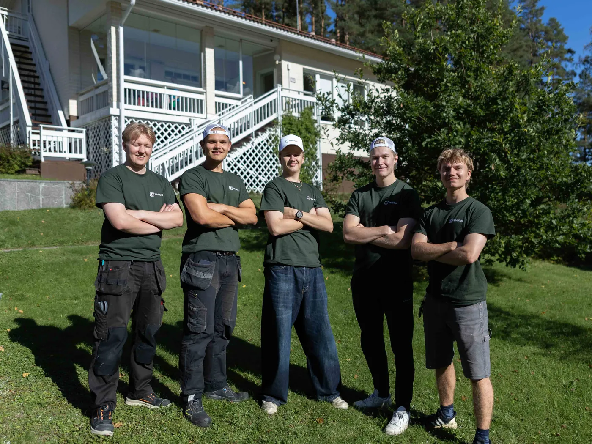

5,012 Google-arvostelua
Kylmä veto
Kylmä veto
ei kuulu kotiin.
Vaihdamme ovien ja ikkunoiden tiivisteet kiinteään hintaan.
Kiinteä hinta · lämpökamerakartoitus veloituksetta · kotitalousvähennys −40 %

Vaihdamme ovien ja ikkunoiden tiivisteet kiinteään hintaan.
Kiinteä hinta · lämpökamerakartoitus veloituksetta · kotitalousvähennys −40 %
Tiivisteet, kynnykset ja säädöt samalla käynnillä.
 75–90 €/ikkuna · minimi 149 €
75–90 €/ikkuna · minimi 149 €
Vetävät ja natisevat ikkunat kuntoon. Karmi- ja puitetiivisteet uusiksi.
Varaa aika 99 €/ovi · minimi 149 €
99 €/ovi · minimi 149 €
Pää-, taka- ja parvekeovet. Tiivisteiden vaihto, lukkojen ja saranoiden öljyäminen ja oven säätö.
Varaa aika Kartoitus 0 €
Kartoitus 0 €
Rappukäytävät ja yhteistilat kerralla kuntoon sopimushinnalla. Kartoituskäynti on veloitukseton.
Varaa ilmainen kartoitusAlempi kappalehinta koskee kaikkia ikkunoita, ei vain rajan ylittäviä. Hinnat sisältävät ALV 25,5 %, tiivisteet ja työn.
| Ikkunoita | Hinta / ikkuna | Esimerkki |
|---|---|---|
| 1–4 | 90 € | 4 ikkunaa = 360 € |
| 5–9 | 85 € | 5 ikkunaa = 425 € |
| 10–13 | 80 € | 10 ikkunaa = 800 € |
| 14+ | 75 € | 14 ikkunaa = 1 050 € |
Porras kannattaa huomata: halvempi hinta koskee taannehtivasti kaikkia ikkunoita, joten kymmenes ikkuna maksaa vain 35 € ja neljästoista 10 €. Laskuri kertoo tämän valintojesi mukaan.
Ulko- ja parvekeovi 99 €, liuku- tai pariovi 149 €, väli-/huoneovi 89 €, pelkkä kynnyskumi 45 €. Pienin veloitus 149 € / käynti.
Hinta on sama kuin laskurissa. Näet sen ennen varausta, eikä siihen tule jälkikäteen lisiä. Asentaja siivoaa jälkensä lähtiessään.

Osuus on arvio, ei lupaus. Kerromme mihin se perustuu, niin voit miettiä sitä oman kotisi kohdalla.
Osuus koskee tavallista kotia, jonka vetävien ovien ja ikkunoiden tiivisteet uusitaan. Mitä useampi kohta vuotaa, sitä suurempi osuus laskusta menee harakoille.
Rako päästää lämmitettyä ilmaa ulos ja kylmää tilalle, joten lämmitys käy kovemmilla koko talven. Kun rako umpeutuu, sama sisälämpötila vaatii vähemmän energiaa.
Kuvaamme kohteen lämpökameralla ennen työtä, joten näet paikan päällä mistä kohdista sinun kodissasi vuotaa.
Osuus on arvio siitä, kuinka paljon vetävät ovet ja ikkunat kasvattavat lämmityskulua. Emme lupaa tiettyä säästöä etukäteen, koska lopputulos riippuu talosta, lämmitystavasta ja siitä kuinka moni kohta vuotaa.
Laskurista näet hinnan itse. Jos on helpompi kysyä ensin, soita.
Pienin veloitus on 149 €, joka kattaa käynnin, matkat, kartoituksen ja lämpökamerakuvauksen. Sen jälkeen hinta muodostuu valitsemistasi kohteista kiinteillä hinnoilla. Ikkuna maksaa 90 € kappaleelta, ja hinta laskee määrän mukaan: 5–9 ikkunaa 85 €, 10–13 ikkunaa 80 € ja 14 ikkunasta ylöspäin 75 € kappaleelta. Ulko- ja parvekeovi on 99 €, terassin liuku- tai pariovi 149 €. Esimerkiksi yksi ikkuna on 149 € (minimiveloitus) ja kuusi ikkunaa 6 × 85 € = 510 €. Näet kokonaishinnan heti laskurista, ja kotitalousvähennys pienentää työn osuutta jopa 40 %.
Suurin yksittäinen kustannus pienessä työssä on matka ja työpisteen pystytys. Kun asentaja on jo paikalla, seuraava kohde maksaa vähemmän: väli- tai huoneovi 89 € → 59 €, kun samaan käyntiin kuuluu vähintään yksi muu ovi tai ikkuna. Ulko- ja parvekeovi on 99 € aina, myös yksin tilattuna. Laskuri huomioi tämän automaattisesti.
Vanhojen tiivisteiden poisto, pintojen puhdistus, uudet silikonitiivisteet sekä oven käynnin säätö niin, että ovi painuu tasaisesti tiivisteitä vasten. Ulko-oviin kuuluu myös lukkojen ja saranoiden öljyäminen. Kynnyskumin vaihto on tarvittaessa erillinen lisätyö (45 €).
Jos ovilehti ja karmi ovat suorassa ja ovi toimii, tiivisteiden uusiminen riittää lähes aina. Se maksaa murto-osan uuden oven hinnasta (2 200–4 900 €) ja poistaa vedon. Katsomme oven kunnon paikan päällä ja sanomme, jos tiivistys ei sinun kohdallasi riitä.
Vetävä ovi tai ikkuna nostaa lämmityskulua tyypillisesti 10–15 %. Kun raot umpeutuvat, sama sisälämpötila vaatii vähemmän energiaa. Emme lupaa tiettyä säästöä etukäteen, koska lopputulos riippuu talosta, lämmitystavasta ja siitä kuinka moni kohta vuotaa. Kuvaamme kohteen lämpökameralla, jolloin näet mistä kohdista juuri sinun kodissasi vuotaa.
Kyllä. Työlle ja asennetuille materiaaleille on kahden vuoden takuu. Meillä on toiminnan vastuuvakuutus, joka kattaa työn aikana kohteelle sattuvat vahingot.
Koko Uudenmaan alueella — Helsinki, Espoo, Vantaa ja kehyskunnat — sekä Riihimäellä. Kerro postinumerosi varauksen yhteydessä, niin vahvistamme, että palvelemme alueellasi.
Valitset laskurista ovet ja ikkunat, näet kiinteän hinnan ja siirryt varaamaan vapaan ajan kalenterista. Saat vahvistuksen sähköpostiin. Hinta on kiinteä jo ennen varausta — tarkistamme sen vielä paikan päällä ennen työn aloitusta.
Ovien ja ikkunoiden tiivistys on kotitaloustyötä. Saat meiltä laskun, jossa työn osuus on valmiiksi eritelty — ilmoitat sen OmaVerossa ja vähennät jopa 40 % työn osuudesta (enintään 2 100 € / henkilö vuosina 2026–2027, omavastuu 150 €).